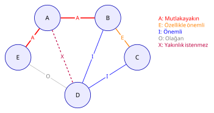

HF06 - Akış, Alan ve Etkinlik İlişkileri II
Ana fikir
Etkin yerleşim için yalnız malzeme miktarı değil; insan, bilgi, güvenlik ve destek ilişkileri de ölçülür. Farklı malzemeleri ortak ölçüye çevirmek için MAG (Malzeme Akış Grafı) akış şiddeti kullanılır; ürün rotalarından from-to (geliş-gidiş) matrisi kurularak nicel akış, A-E-I-O-U-X faaliyet ilişki şeması (REL) ile nitel yakınlık temsil edilir. Bu ikisi faaliyet ilişki diyagramına (AID) ve bölüm alan hesabına dönüştürülerek ölçekli yerleşim alternatifleri üretilir.

1. Akış seviyeleri
Akış planlama hiyerarşisi dört kademededir; her üst kademe alt kademenin etkinliğine bağlıdır:
- Tesisler arası: tedarikçi, fabrika, depo ve müşteri ağı (tedarik zinciri / lojistik).
- Bölümler arası: üretim alanları arasındaki yük hareketi.
- Bölüm içi: iş istasyonları arasındaki rota.
- İş istasyonu içi: operatörün el, göz ve ekipman hareketleri (hareket etüdü, ergonomi).
Etkin bir akış; doğrudan, kesintisiz, geri dönüşsüz, çaprazlaşması az ve güvenli olmalıdır. Akış mal kabulle başlar, sevkiyatla biter; süreç içi stok (WIP) ve geri dönüşler en aza indirilir.
2. MAG akış şiddeti hesabı
Malzemeler benzer özellikteyse (aynı boyut, ağırlık, zarar riski, biçim) akış doğrudan taşıma/gezi sayısı ile ölçülebilir. Ancak parçalar birbirinden farklıysa ortak bir taşınabilirlik ölçüsü gerekir; bunun için MAG geliştirilmiştir.
2.1 Temel formül
Bir parçanın taşınabilirliğini etkileyen beş etmen vardır:
- A: Parçanın boyutu (hacmi) → temel MAG ölçüsü
- B: Parçanın yoğunluğu
- C: Parçanın biçimi
- D: Parçaya veya çevresine zarar verme riski
- E: Parçanın durumu (kayganlık, elle taşıma güçlüğü vb.)
Köşeli parantez önce
düzeltmeleri doğrudan A’ya eklenmez; önce hesaplanıp 1 ile toplanır, sonuç A ile çarpılır. Düzeltmeler negatif de olabilir (örn. zarar riski düşükse ).
2.2 A değerinin interpolasyonla bulunması
A, parçanın hacmine karşılık gelen tablo değeridir. Tablo ara değer içermiyorsa doğrusal interpolasyon uygulanır:
| Hacim (cm³) | Hacim (in³) | MAG Ölçüsü (A) |
|---|---|---|
| 0,75 | 0,05 | 0,005 |
| 1,5 | 0,1 | 0,05 |
| 15 | 1 | 0,25 |
| 150 | 10 | 1 |
| 1.500 | 100 | 3,5 |
| 15.000 | 1.000 | 10 |
| 150.000 | 10.000 | 25 |
| 1.500.000 | 100.000 | 50 |
B, C, D, E değerleri ise ders sunumundaki yoğunluk/biçim/risk/durum tablosundan, parçanın sözel tanımına bakılarak seçilir.
2.3 Dönemsel akış şiddeti
Parça başına MAG bulunduktan sonra dönemsel (yıllık/günlük) akış şiddeti:
= dönemdeki üretim miktarı, = aynı bölümler arası geçişin parça başına tekrar sayısı (genelde 1).
3. From-to (geliş-gidiş) matrisi
3.1 Tanım
From-to matrisi, satır ve sütunlarında aynı sırada listelenen iş istasyonu / bölüm adlarını içeren kare bir matristir. Satır = nereden (from), sütun = nereye (to).
- Matris simetrik değildir: akışı ile akışı farklıdır.
- Hücrelere ortak bir ölçütle akış işlenir (MAG/gün, palet/gün, taşıma birimi/gün vb.).
3.2 Matris kurma prosedürü — adım adım
- Bölümleri listele. Tüm bölüm/iş istasyonu adlarını (kod/numara) hem satıra hem sütuna aynı sırada yaz. Köşegen (i=i) kullanılmaz, ”—” ile kapatılır.
- Ortak ölçü tesis et. Malzemeler eşdeğerse ölçü = taşıma sayısı. Farklıysa her ürün için eşdeğer katsayı (ör. büyük parça = küçüğün 2 katı) veya MAG ile ortak birime çevir.
- Rotaları ardışık yönlü çiftlere ayır. Her ürünün rotasını oklarla yeniden yaz; yalnız ardışık geçişler hücre üretir. Örn. A-C-B → A→C ve C→B (A→B yoktur!).
- Ürün eşdeğer miktarını her geçişe ekle. Bir ürünün her ardışık çiftine, o ürünün eşdeğer üretim miktarını () ekle: ( = p ürününün rotasında geçişinin tekrar sayısı.)
- Yönlü matris tamamlanır. Tüm ürünler işlendiğinde her hücre kümülatif yön bilgisini taşır.
- (Gerekirse) toplam akış matrisi. Yön önemsizse her bölüm çifti için iki yönü birleştir: Bu birleşik çift akış, yakınlık şiddetini gösterir ve REL şemasına temel olur.
3.3 Yerleşim taşıma ölçütü
From-to matrisi, yerleşim alternatiflerini karşılaştırmak için kullanılır:
= birim yük-birim mesafe maliyeti, = bölümler arası uzaklık. Amaç bu toplamı minimize eden yerleşimdir.
ij ve ji akışını çift sayma hatası
En sık yapılan iki hata:
- Ardışık olmayan çiftleri eklemek. A-C-B-D-E rotası yalnız A→C, C→B, B→D, D→E üretir. A→B veya A→D yoktur; rotada bu harfler ardışık değildir.
- Toplam akışı bulurken çift sayma. Birleşik çift akışta her bölüm çifti bir kez yazılır: . Hem hem hücresini ayrı ayrı toplam matrisine işlersen akış iki kat şişer. Toplam matriste yalnız üst (veya alt) üçgeni doldur. Kontrol: yönlü matristeki tüm hücrelerin toplamı = birleşik çift akış matrisindeki hücrelerin toplamı olmalı.
4. Faaliyet ilişki şeması (REL chart)
Akış ilişki şeması tek başına yetmez; faaliyet ilişki şeması hangi bölümün hangi bölüme yakın olması gerektiğini ve bunun gerekçesini/önem derecesini gösterir. Muther (1973) Yakınlık İlişki Değerleri kullanılır.
4.1 A-E-I-O-U-X değer tablosu
| Kod | Anlam | Sayısal Değer | Renk Kodu | Çizgi Kodu | Tipik Bulunma % |
|---|---|---|---|---|---|
| A | Kesinlikle gerekli (mutlaka yakın) | 4 | Kırmızı | 4 çizgi | ~5 % |
| E | Özellikle (çok) önemli | 3 | Turuncu-Sarı | 3 çizgi | ~10 % |
| I | Önemli | 2 | Yeşil | 2 çizgi | ~15 % |
| O | Olağan / sıradan yakınlık | 1 | Mavi | 1 çizgi | ~20 % |
| U | Önemsiz | 0 | Renksiz | — (çizgi yok) | ~50 % |
| X | Arzu edilmez (yakınlık istenmez) | −1 | Kahverengi | zikzak | düşük |
| XX | Kesinlikle istenmez | −2, −3, −4 | Siyah | çift zikzak | çok düşük |
İlişki kodunun yanına bir de gerekçe kodu yazılır. Örnek gerekçe kodları: 01 ortak ekipman kullanımı, 02 malzeme hareketi, 03 personel hareketi, 04 denetim, 05 ortak gereç kullanımı, 06 gürültü ve kirlilik, 07 iletişim sıklığı.
4.2 Akıştan ilişki sınıfına geçiş
Birleşik çift akış değerleri sınıf sınırlarıyla A-E-I-O-U-X kodlarına çevrilir. HF06 kaynak örneğindeki sınıflandırma (bu sınırlar probleme göre değişir):
| Akış aralığı (MAG/gün) | İlişki | Sayısal değer | Çizgi |
|---|---|---|---|
| 0 – 11 | U (önemsiz) | 0 | tek çizgi |
| 12 – 22 | O (normal) | 1 | çift çizgi |
| 23 – 34 | I (önemli) | 2 | üç çizgi |
| 35 – 46 | E (özellikle önemli) | 3 | dört çizgi |
| 47 – 57 | A (kesinlikle gerekli) | 4 | taralı çizgi |
Sınıf sınırı ve sıfır akış tuzakları
- Kaynak slaytındaki “11-22” yazımı 11’i iki sınıfa sokar; ayrık sınır olarak 12-22 alınmalıdır.
- Sıfır akışlı çift otomatik X değildir. Yalnız akış ölçütü kullanılıyorsa sıfır akış U (önemsiz) demektir. X (arzu edilmez) ancak gürültü, kirlilik, güvenlik gibi olumsuz bir gerekçe varsa verilir. Slayt 85’te akışsız çiftlerin X gösterilmesi bir kaynak tutarsızlığıdır; sınavda hocanın verdiği sınıf tablosu uygulanmalı ve bu varsayım açıkça yazılmalıdır.
5. Faaliyet ilişki diyagramı (AID) çizimi
AID, REL şemasındaki yakınlık değerlerini mekânsal yerleşime çevirir. Büyük oranda tasarımcının kararına bağlıdır; yakınlık dereceleri tatmin edildiğinde durulur.
5.1 Çizim adımları (sistematik prosedür)
- Bölüm sayısı ve adları belirlenir. Eylem türleri için uygun sembol kullanılır; sembol içine bölüm kodu yazılır.
- Önce A ilişkileri çizilir. A bağlı bölümler en kısa/en yakın yerleştirilir (4 hatlı bağlar eşit ve kısa uzaklıkta).
- E ilişkileri eklenir (3 hatlı), diyagram yeniden düzenlenir.
- X / XX çiftleri mümkün olduğunca uzak tutulur (zikzak hat).
- I, sonra O ilişkileri sırayla eklenir (2 ve 1 hatlı), her turda yeniden düzenlenir.
- Geriye kalan bölümler (U) eklenir.
- Doğruluk kontrolü: tüm bölümler yerleşti mi, önemli (A, E, X) ilişkilere uyuldu mu? Bağlantı çizgileri birbirini kesmemelidir.
5.2 Genel akış diyagramı
flowchart TD F[Akış verisi / MAG] --> FT[From-to matrisi yönlü] FT --> TM[Birleşik çift akış matrisi] TM --> REL[A-E-I-O-U-X şeması REL] N[Nitel gerekçeler: gürültü, denetim, iletişim] --> REL REL --> AID[Faaliyet ilişki diyagramı AID] S[Alan gereksinimleri] --> SR[Alan ilişki diyagramı] AID --> SR SR --> L[Ölçekli yerleşim alternatifleri]
5.3 AID metinsel gösterim örneği
A=B (A,4) ve B=C (E,3), A=C (X,−1) ise diyagram hedefleri:
[A] ════════ [B] ════ A (kesinlikle gerekli, en yakın)
⋮ ║ ║ E (özellikle önemli, yakın)
(X) ║ ⋮ X (arzu edilmez, uzak)
⋮ ║
[C] ─────────╝ ← B-C yakın, ama A-C uzak tutulur
Çakışma olursa A ve X zorunluluklarına öncelik verilir, çelişki kısıt olarak açıklanır.
6. Bölüm alan hesabı
Bir bölümün alanı yalnız makine taban alanı değildir; donanım, malzeme, personel ve destek alanlarını kapsar.
6.1 İşletme donanım alanı (alan katsayısı yöntemi)
Makine türü için: taban alanı , alan katsayısı , adet :
Birim kontrolü
Katsayı yalnız makine sayısıyla değil, adet × taban alanı × katsayı ile çarpılır. Taban alanını atlamak en sık alan hatasıdır.
6.2 Destek alanları
Ders görselindeki yaklaşık destek katsayıları (hepsi tabanlıdır):
Dört kalem de uygulanırsa toplam:
6.3 Genel bölüm/tesis alanı
Personel, bakım, tesis hizmetleri ve özel depolar ayrıca eklenir:
Personel alanı genelde işçi sayısı × kişi başı alan, makine alanı makine sayısı × makine başı alan, üzerine destek alanları eklenerek bulunur. Toplam tesis alanı tüm bölümlerin toplamıdır.
Yüzdeleri art arda uygulama
Destek oranları kümülatif olarak değil, her biri doğrudan ile çarpılır. Önce , sonra onun üzerine gibi zincirleme yüzde uygulamak yanlıştır. Ayrıca aynı alanı (ör. koridor) iki kez sayma.
7. Tam çözümlü örnekler
Örnek 1 — MAG akış şiddeti (slayt 55-56)
Veri
Silindir kalıp merkezleme mili: taban çapı cm, yükseklik cm, . Ağır ve yoğun (B=2), uzun-yuvarlatılmış-düzensiz (C=1), kolay zarar görmez (D=−1), yağlı ve elle taşıması zor (E=1). Yılda 50.000 adet.
1) Hacim (yarıçap cm):
2) A interpolasyonu (459, 150 ve 1.500 arasında; 150→1, 1.500→3,5):
3) Parça başına MAG:
4) Yıllık akış şiddeti:
Kaynaktaki yuvarlama farkı
Slayt A’yı 1,57 alıp sonucu 2,74 ve yıllık 137.000 verir. Tam interpolasyonla 2,7514 ve 137.569 bulunur. Sınavda hocanın tablo/yuvarlama yaklaşımı belirtilerek işlem gösterilmelidir.
Örnek 2 — From-to matrisi ve REL (slayt 59, 83-85)
Veri
P1: 30 adet, rota A-C-B-D-E; P2: 12 adet, rota A-B-D-E; P3: 7 adet ama 2 kat eşdeğer (eşdeğer = 14), rota A-C-D-B-E.
1) Rotaları ardışık çiftlere ayır:
| Ürün | Eşdeğer miktar | Ardışık geçişler |
|---|---|---|
| P1 | 30 | A→C, C→B, B→D, D→E |
| P2 | 12 | A→B, B→D, D→E |
| P3 | 7×2 = 14 | A→C, C→D, D→B, B→E |
2) Yönlü from-to matrisi:
| Yön | Katkı | Akış |
|---|---|---|
| A→B | P2 | 12 |
| A→C | P1 + P3 | 44 |
| B→D | P1 + P2 | 42 |
| B→E | P3 | 14 |
| C→B | P1 | 30 |
| C→D | P3 | 14 |
| D→B | P3 | 14 |
| D→E | P1 + P2 | 42 |
3) Birleşik çift akış (her çift bir kez, ):
| Çift | Hesap | Toplam |
|---|---|---|
| B-D | 42 + 14 | 56 → A |
| A-C | 44 + 0 | 44 → E |
| D-E | 42 + 0 | 42 → E |
| B-C | 30 + 0 | 30 → I |
| C-D | 14 + 0 | 14 → O |
| A-B | 12 + 0 | 12 → O |
4) REL şeması (12-22 O, 23-34 I, 35-46 E, 47-57 A): B-D = A; A-C ve D-E = E; B-C = I; C-D ve A-B = O. Akışsız çiftler (ör. A-D, A-E, C-E) yalnız akış ölçütü kullanılıyorsa U’dur (otomatik X değil!).
Örnek 3 — Alan katsayısı hesabı (slayt 95-97)
Veri
20 adet tezgâh × 10 m² (katsayı 3,11); 15 adet × 13 m² (katsayı 3,00); 5 adet × 7 m² (katsayı 3,42).
1) İşletme donanım alanı:
2) Dört destek oranı uygulanırsa (öğretim genişletmesi):
Kaynak slayt 97 yalnız ana fonksiyon alanını ( ) sorar; ikinci sonuç destek alanları da istendiğinde geçerlidir.
8. Pratik sorular
Soru 1 — MAG hesabı
Question
Bir parça için , B=1, C=0, D=−1, E=2. Parça başına MAG değeri nedir?
Çözüm
Soru 2 — A interpolasyonu
Question
250 cm³’lük bir parça için tablodaki 150→1 ve 1.500→3,5 değerlerinden A’yı doğrusal interpolasyonla bulunuz.
Çözüm
Soru 3 — From-to çift sayma kontrolü
Question
X: 10 adet, rota A-B-C; Y: 6 adet, eşdeğer katsayı 3, rota C-B-A. (a) Y’nin eşdeğer miktarı? (b) , , , ? (c) Toplam (birleşik) A-B çifti akışı?
Çözüm . (b) X rotası A→B, B→C verir; Y rotası C→B, B→A verir. Dolayısıyla , , , . (c) Birleşik A-B çifti = . Dikkat: bu 28'i toplam matriste yalnız (A,B) hücresine yaz; ayrıca (B,A)'ya da yazarsan çift sayarsın.
(a) Y eşdeğer =
Soru 4 — Akıştan ilişkiye
Question
Kaynak sınıflarında (12-22 O, 23-34 I, 35-46 E, 47-57 A) birleşik akış değeri 33 olan bir çiftin ilişki kodu ve sayısal değeri nedir?
Çözüm I (önemli), sayısal değer 2, çizgi: üç çizgi.
33 ∈ [23, 34] → ilişki kodu
Soru 5 — Alan hesabı
Question
. Ara depo (0,20), kalite kontrol (0,13), serbest alan (0,18), ulaşım yolları (0,25) oranlarıyla (a) dört destek alanını, (b) genel toplamı bulunuz.
Çözüm ; ; ; . (b) Destek toplamı . Genel toplam (eşdeğeri ).
(a)
9. Sık yapılan hatalar (özet)
| Yanlış adım | Neden yanlış? | Kontrol |
|---|---|---|
| Çapı yarıçap almak | Hacim 4 kat büyür | |
| B+C+D+E’yi doğrudan A’ya eklemek | Düzeltme önce 1 ile toplanıp A ile çarpılır | Köşeli parantezi önce hesapla |
| Rotada ardışık olmayan çifti eklemek | Yalnız ardışık geçiş hücre üretir | Rotayı oklarla yaz |
| ij ve ji’yi toplam matriste ayrı yazmak | Akış iki kat şişer | Birleşik matriste her çifti bir kez yaz |
| Sıfır akışı X yapmak | X için olumsuz gerekçe gerekir | Akış dışı gerekçe yoksa U yaz |
| Katsayıyı yalnız makine sayısıyla çarpmak | Taban alanı eksik kalır | |
| Destek yüzdelerini zincirleme uygulamak | Oranlar tabanlıdır | Her kalemi doğrudan ile çarp |
Kaynaklar
Öğrenme paketleri
Diğer kaynaklar
Önceki: HF05 - Akış, Alan ve Etkinlik İlişkileri I · Sonraki: HF07 - Yerleşim Tasarımı I